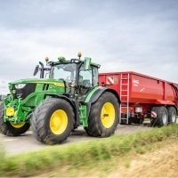
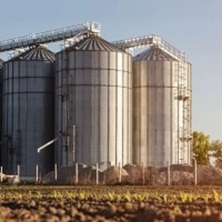
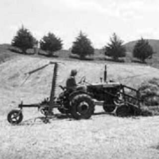
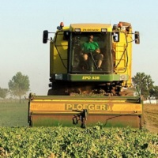

Oferta
-

Euforia
najpopularniejsza odmiana w Polsce
Pełna charakterystyka
- Doskonałe plonowanie
- Rewelacyjna zimotrwałość (5,5–6)
- Jakość E/A- stabilna także podczas mokrych żniw
- Tolerancyjna na wczesny i opóźniony termin siewu
- Bardzo dobra odporność na wyleganie
- Ziarno ciężkie, dobrze wyrównane
- Odporna na porastanie
-

Alegoria
plonuje wysoko i pewnie, niezależnie od pogody
Pełna charakterystyka
- Lider plonowania – numer 1 w intensywnej uprawie w badaniach COBORU 2023
- Odporna na kaprysy pogody – świetnie znosi suszę i upały
- Zdrowa od kłosa po korzeń – wysoka odporność na choroby zbóż
- Mocna słoma, brak wylegania – stabilny zbiór w każdych warunkach
- Piękne, grube ziarno – wysoka MTZ i doskonałe parametry jakościowe
- Bogata w gluten i białko – idealna dla młynarzy i piekarzy
- Prosta w prowadzeniu – stabilny rozwój, równomierne dojrzewanie
-

Bestia
odmiana o wysokiej odporności i stabilnym plonowaniu
Pełna charakterystyka
- Plon: bardzo wysoki — w doświadczeniach COBORU 2025 osiągnęła 107% wzorca zarówno na A1, jak i A2; w doświadczeniach regionalnych 2024 zdarzały się wyniki nawet 120–140% wzorca
- Zimotrwałość: 4/9
- MTZ: około 49–51 g, czyli bardzo grube ziarno
- Zdrowotność: szczególnie dobrze wygląda rdza żółta (7/9); mączniak, septoriozy i brunatna plamistość są na poziomie około 6/9
- Wyleganie: ocena około 3/9
- Wysokość: około 102–104 cm
- Siew opóźniony: tak, odmiana jest do niego przydatna
- Po kukurydzy: również polecana
- Chlorotoluron: odporna/tolerancyjna, co daje dodatkową opcję w ochronie herbicydowej
-

Willkox
nowoczesna odmiana o dobrych parametrach jakościowych
Pełna charakterystyka
- Typ: pszenica ozima, jakościowa A
- Płonowanie: bardzo wysokie; w niemieckich doświadczeniach BSA/BSV osiągała wyniki do ok. 11,1 t/ha, a w części lokalizacji ponad wzorzec
- Zdrowotność: mocna strona odmiany — szczególnie rdza żółta i mączniak, dobrze wypada też pod względem septoriozy
- Wyleganie: dobra odporność
- Dojrzewanie: średnie
- Krzewienie/kłoszenie: średnie
- MTZ: ok. 43,9 g
-

Biesiada
uniwersalna odmiana o szerokim zastosowaniu
Pełna charakterystyka
- Mrozoodporność: 5,5/9 – bardzo wysoka
- Grupa A – pszenica jakościowa, młynarsko-piekarska
- Wysoka tolerancja na zakwaszenie gleby – duży plus na słabszych stanowiskach
- Rośliny ok. 95 cm, ze sprężystą, mocną słomą
- Dobra zdrowotność i gen Pch1, związany z odpornością na łamliwość podstawy źdźbła
- MTZ ok. 50 g i dobra odporność ziarna na osypywanie
- Deklarowana zawartość białka powyżej 13%
- Zalecana obsada w terminie optymalnym: 300–350 ziaren/m², czyli orientacyjnie 150–180 kg/ha przy podanym przez hodowcę MTZ


Możliwość wysyłki kurierem na terenie całej Polski (minimum logistyczne 1 000 kg). Cena ustalana indywidualnie.
Zapytaj o cenę i dostępność
O nas
-

Obszar świadczenia usług
Cała Polska!
Świadczymy usługi na terenie całego kraju.
-

Kim jesteśmy?
Nasze gospodarstwo rolne specjalizuje się w produkcji kwalifikowanego materiału siewnego. Począwszy od plantacji nasiennych prowadzonych w naszym gospodarstwie, poprzez proces czyszczenia na nowoczesnej linii z wykorzystaniem najnowszej technologii optycznej oraz zaprawiania wysokiej klasy zaprawami nasiennymi, możemy zaoferować najwyższej jakości nasiona.
-

Początki
Gospodarstwo rolne, które w rodzinie znajduje się od 1860 roku, produkcją nasienną zajmuje się od lat 60-tych ubiegłego wieku — początkowo we współpracy z Centralą Nasienną, a obecnie we współpracy z wiodącymi hodowlami nasiennymi.
-
Nasi Klienci
Produkujemy również nasiona dla firm zajmujących się obrotem materiału siewnego, takich jak PROCAM Polska Sp. z o.o., Agrolok Sp. z o.o. oraz PZZ w Kwidzynie Sp. z o.o.
-

Co oprócz nasion?
Poza produkcją materiału siewnego w gospodarstwie uprawiany jest rzepak ozimy, kukurydza oraz warzywa dla przetwórstwa – groszek zielony i kukurydza cukrowa. Prowadzona jest również hodowla trzody chlewnej. Od stada 100 loch sprzedawane są warchlaki do dalszego chowu.
- Zapraszamy do współpracy!
Kontakt
Gospodarstwo Rolno-Nasienne Stefan Ziętarski
+48 600 820 685 zietarscy@poczta.onet.pl Słup 14, 86-330 MełnoNIP 8762027183